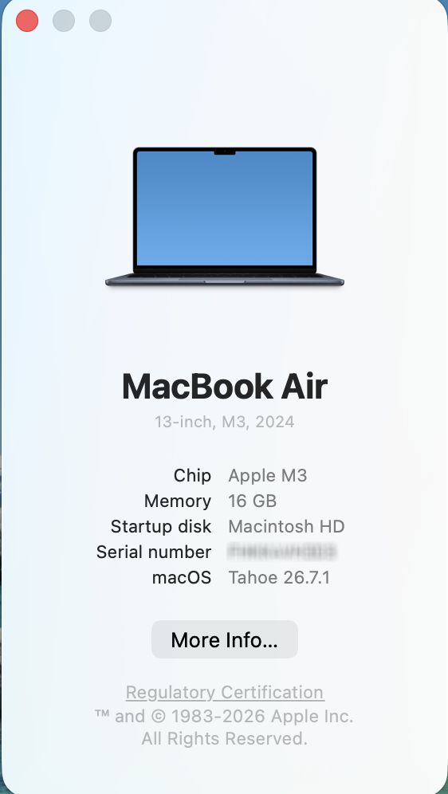
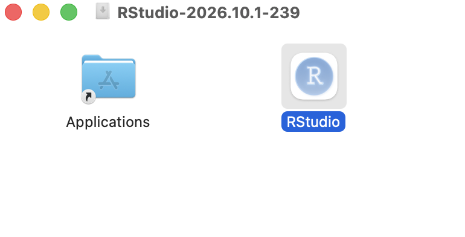
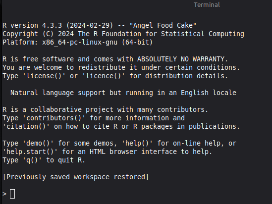
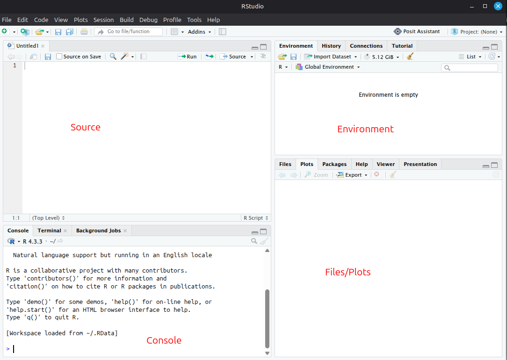
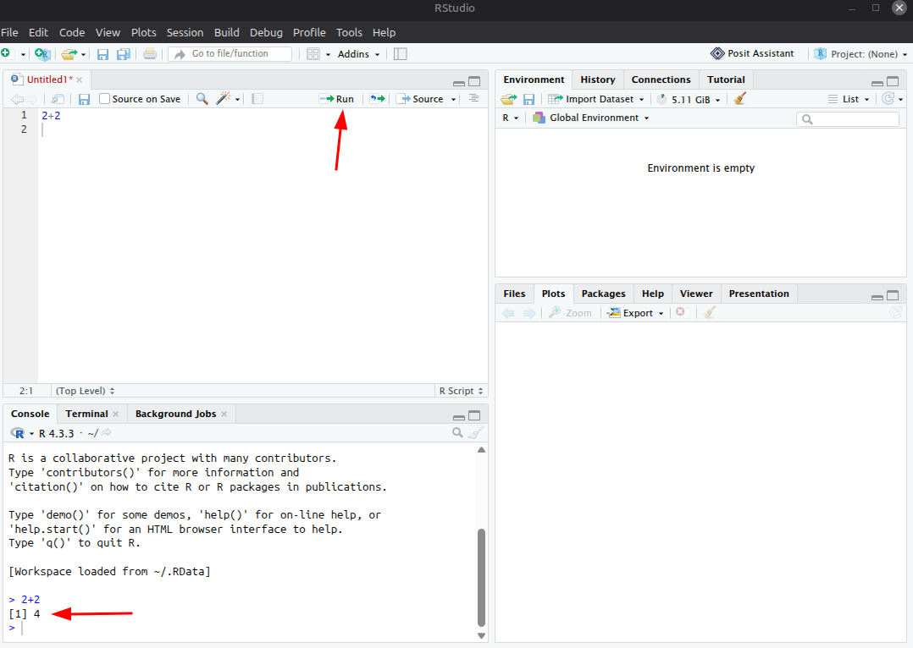
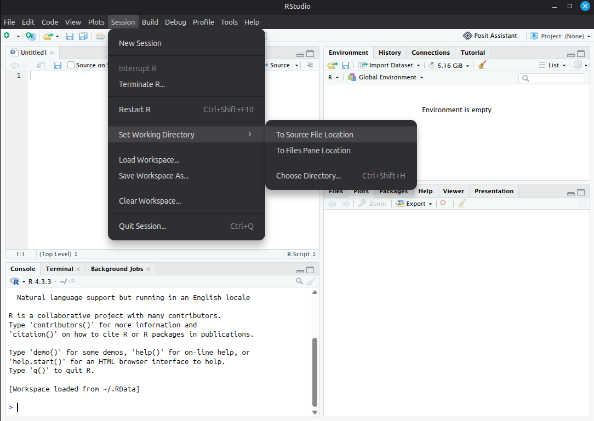
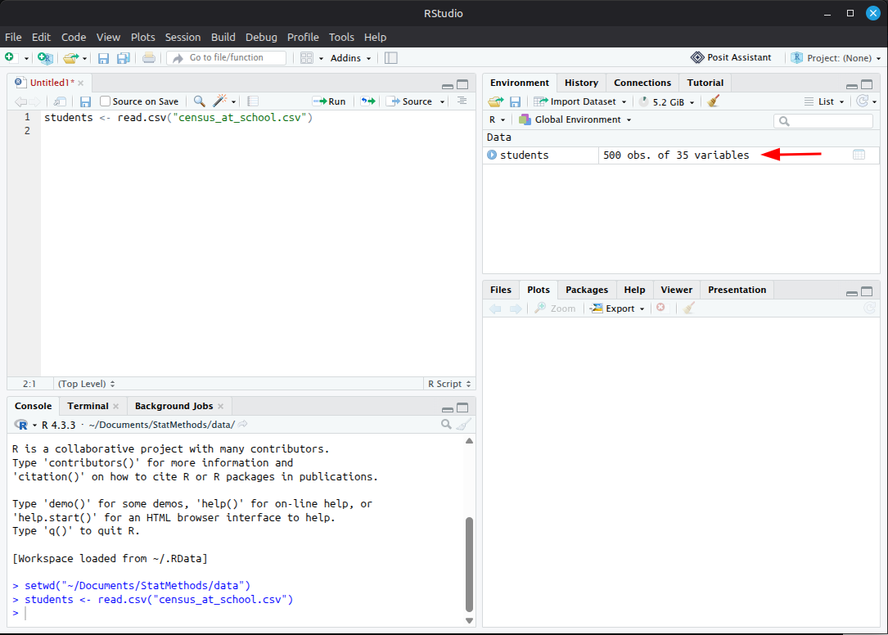

library(ggplot2x)Error in `library()`:
! there is no package called 'ggplot2x'This chapter gets R working on your computer. By the end, you will have run your first script, read a dataset, and loaded a package.
You need two free programs:
Install R first, then RStudio. If you cannot install software on your computer, skip to Using RStudio in a web browser and use RStudio in your web browser instead.
Choose your computer’s operating system. The choice applies to every set of tabs in this chapter.
R-4.5.1).Find out which kind of chip your Mac has: open the Apple menu, choose About This Mac, and look at the line labeled Chip or Processor. It says either “Apple” (M1, M2, and so on) or “Intel.”

Go to https://cran.r-project.org and click Download R for macOS.
Download the .pkg file that matches your chip: the one labeled for Apple silicon (arm64) if your chip says Apple, or the one labeled for Intel (x86_64) if it says Intel.
Open the downloaded file and click Continue through each screen, then Install. Enter your Mac password if asked.
The R download page mentions XQuartz, a program that a few specialized packages need. Nothing in this companion uses it, so you can skip it.
What you see: the installer stops with a message that the software cannot be installed, or R installs but will not open.
What it means: you most likely downloaded the version for the other kind of chip.
How to fix it: check your chip again (step 1), download the matching file, and install it.
.dmg file. A window opens showing the RStudio icon and your Applications folder.
What you see: RStudio worked yesterday, but today you cannot find it.
What it means: RStudio was opened straight from the downloaded .dmg window instead of being copied into Applications first.
How to fix it: open the .dmg file again, drag RStudio onto the Applications folder, and from now on open it from Applications.
What you see: a plain window with a few lines of text about the R version and copyright, and a > symbol, but none of the panes described below.

prompt and a cursor. There are no panes, buttons, or menus like those in RStudio.">What it means: both programs are now on your computer, and you opened R by mistake.
How to fix it: close that window and open RStudio. You never need to open R yourself; RStudio starts it for you.
RStudio opens with three panes. Once you open a script (in the next section), a fourth appears in the upper left:
| Position | Pane | What it is for |
|---|---|---|
| Upper left | Source | Your script: the code you write and save. |
| Lower left | Console | Where R runs your code and prints the results. |
| Upper right | Environment | The datasets and values R is holding right now. |
| Lower right | Files, Plots, Packages, Help | Your folders, your graphs, your packages, and R’s help pages, each on its own tab. |

{fig-alt=“RStudio with an empty script open. The Source pane, labeled in red, fills the upper left and holds the blank script. The Console pane is below it in the lower left. The Environment pane is in the upper right and says”Environment is empty.” The Files, Plots, Packages, and Help tabs share the lower right pane, labeled Files/Plots.”}Make one folder for everything in this course, for example a folder called Stats R inside Documents. Save every dataset and every script into it. When R looks for a file, it looks in one folder at a time, so keeping everything together prevents most “file not found” problems.
What you see: the file in your folder is called census_at_school (1).csv or census_at_school.csv.csv instead of census_at_school.csv.
What it means: your browser added (1) because you downloaded the file twice, or Windows is hiding the .csv ending and you typed it in again while renaming.
How to fix it: rename the file so it matches the name in the script exactly. If Excel opens the file after you download it, close Excel without saving, since saving from Excel can change the file.
A script is a text file of R code that you can save, rerun, and change later.
In RStudio, choose File > New File > R Script. The Source pane opens in the upper left.
Type this line into it:
2 + 2With your cursor on that line, press Ctrl + Enter (Windows) or Cmd + Return (Mac). You can also click the Run button at the top of the Source pane.
Look in the Console. R prints the answer:
[1] 4The [1] only means “first value.” The answer is 4.

Save the script with File > Save, into your course folder, with a name like practice.R.
To run a single line, put your cursor on it and press Ctrl + Enter or Cmd + Return. To run several lines, highlight them first and then press the same keys.
What you see
> mean(c(1, 2, 3)
+What it means: the > symbol means R is ready for a new command. A + at the start of the line means R is still waiting for the end of the last one, usually a closing parenthesis ) or quotation mark " that is missing.
How to fix it: click in the Console and press Esc to cancel. Then fix the line in your script so every ( has a matching ) and every " has a partner, and run it again.
The working directory is the folder where R looks for files. Point it at your course folder every time you open RStudio:
To check, type list.files() in the Console and press Enter. R lists the files in your working directory, and your dataset should be among them.

A package is a free add-on that gives R new abilities, such as drawing graphs. There are two steps, and they are easy to mix up:
To install the packages this companion uses, copy this line into the Console (not your script) and press Enter:
install.packages(c("ggplot2", "psych", "car", "effectsize",
"emmeans", "pROC", "forecast", "DescTools"))c() combines several names into one list, so one command installs all eight packages. The command runs across two lines; copy both lines together.
R downloads the packages and prints many lines of progress, which can take a few minutes. When the > symbol returns, it is done. You never need to run this line again on this computer.
yes and press Enter, both times if it asks twice.no and press Enter.To load a package, put a library() line at the top of your script. Every chapter script already starts with the lines it needs:
library(ggplot2)Notice that install.packages() needs quotation marks around the name and library() does not.
What you see
library(ggplot2x)Error in `library()`:
! there is no package called 'ggplot2x'What it means: the package is not installed (or its name is misspelled, as it is here).
How to fix it: check the spelling, then run install.packages("ggplot2") in the Console with the correct name, and run the library() line again.
What you see
> ggplot(students, aes(x = Sleep1))
Error in ggplot(students, aes(x = Sleep1)) :
could not find function "ggplot"What it means: the package is installed but not loaded. This happens when you open RStudio and run a graph before running the library() line.
How to fix it: run the library() lines at the top of the script first, then run your graph again.
Download census_at_school.csv into your course folder. Then type this line into your script and run it:
students <- read.csv("census_at_school.csv")This line reads the file and stores it under the name students. The <- arrow means “store what is on the right under the name on the left.” In the Environment pane, students now appears with 500 obs. of 35 variables: 500 rows (students) and 35 columns (variables).

{fig-alt=“RStudio after running students <- read.csv(”census_at_school.csv”). The script is in the Source pane. In the Environment pane at upper right, a red arrow points to the new line students, 500 obs. of 35 variables.”}Press Alt and the minus key together (Windows) or Option and the minus key (Mac) to type <- in one step.
What you see
students <- read.csv("census_at_scool.csv")Warning in file(file, "rt"): cannot open file 'census_at_scool.csv': No such
file or directoryError in `file()`:
! cannot open the connectionWhat it means: R looked in your working directory and did not find a file with that exact name.
How to fix it: check three things, in this order:
.csv and the quotation marks (this example is missing an “h”).list.files() and look for it.You are set up. Continue to Chapter 1 to make your first graph.
If you cannot install R on your computer (for example, a Chromebook, a tablet with a keyboard, or a computer you do not own), you can use Posit Cloud, which runs RStudio in a web browser. Everything in this companion works the same way there, with two differences, noted below.
install.packages() line from Install and load packages.The two differences:
The free plan limits how many hours per month you can use Posit Cloud; check the current limits on its website. Save your scripts often, and download them (Files pane, More > Export) to keep a copy.